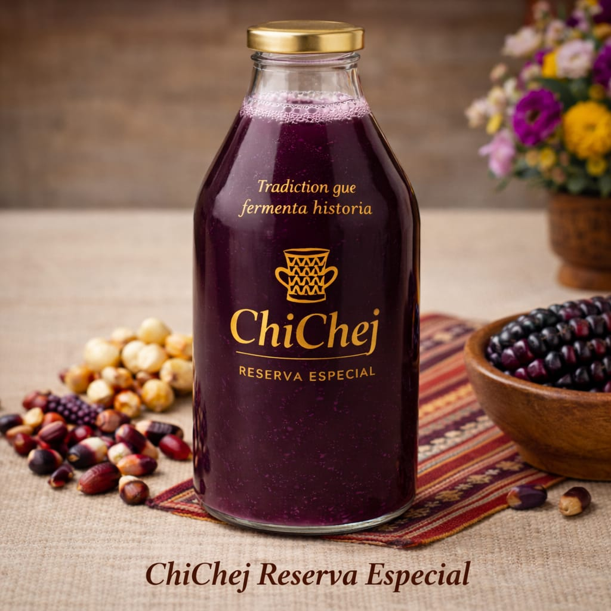

Origen
Reconocer y valorar el conocimiento que hace única nuestra bebida.
Una marca boliviana que transforma herencia, sabor e innovación en una experiencia contemporánea.

CHICHEJ nace del encuentro entre la riqueza de nuestras bebidas tradicionales y el deseo de hacerlas accesibles a nuevas generaciones.
Esta plataforma prepara el camino para conectar a clientes, productos, reservas y dispensadores en un solo lugar, manteniendo siempre una voz auténtica y cercana.
Reconocer y valorar el conocimiento que hace única nuestra bebida.
Construir una experiencia consistente en cada presentación y canal.
Usar la tecnología para acercar el producto sin perder su esencia.
Instituto Tecnológico Marcelo Quiroga Santa Cruz
Carrera de Sistemas Informáticos
Sección preparada para incorporar material oficial cuando esté disponible.